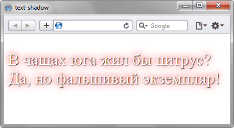

text-shadow
Добавляет тень к тексту, а также устанавливает её параметры: цвет тени, смещение относительно надписи и радиус размытия. Свойство text-shadow может работать совместно с псевдоэлементами :first-letter и :first-line.
Краткая информация
| Значение по умолчанию | none |
|---|---|
| Наследуется | Да |
| Применяется | Ко всем элементам |
Синтаксис
text-shadow: none | <тень> [,<тень>]*где <тень>:
<сдвиг по x> <сдвиг по y> <радиус размытия> <цвет>
Значения
- none
- Отменяет добавление тени.
- <цвет>
- Цвет тени в любом доступном CSS формате. По умолчанию цвет тени совпадает с цветом текста. Необязательный параметр.
- <сдвиг по x>
- Смещение тени по горизонтали относительно текста. Положительное значение этого параметра задает сдвиг тени вправо, отрицательное — влево. Обязательный параметр.
- <сдвиг по y>
- Смещение тени по вертикали относительно текста. Также допустимо использовать отрицательное значение, которое поднимает тень выше текста. Обязательный параметр.
- <радиус>
- Задаёт радиус размытия тени. Чем больше это значение, тем сильнее тень сглаживается, становится шире и светлее. Если этот параметр не задан, по умолчанию устанавливается равным 0. Учтите, что алгоритм сглаживания в браузерах обычно разный, поэтому вид тени может несколько различаться в зависимости от заданных параметров сглаживания.
Допускается указывать несколько параметров тени, разделяя их между собой запятой. В CSS3 учитывается следующий порядок: первая тень в списке размещается на самом верху, последняя в списке — в самом низу. В CSS2 порядок наоборот: первая тень размещается в самом низу, а последняя на самом верху.
Пример
<!DOCTYPE html>
<html>
<head>
<meta charset="utf-8">
<title>text-shadow</title>
<style>
.shadowtext {
text-shadow: 1px 1px 2px black, 0 0 1em red; /* Параметры тени */
color: white; /* Белый цвет текста */
font-size: 2em; /* Размер надписи */
}
</style>
</head>
<body>
<p class="shadowtext">В чащах юга жил бы цитрус? Да, но фальшивый экземпляр!</p>
</body>
</html>Результат примера показан на рис. 1.

Рис. 1. Вид тени в браузере Safari
Объектная модель
Объект.style.textShadow
Примечание
Opera поддерживает максимум 6–9 параметров тени. Повышение этого значения, а также увеличение радиуса размытия свыше 100px сказывается на производительности браузера. Opera до версии 10.1 использует отображение нескольких теней, как в CSS2.
Safari до версии 4.0 поддерживает только один параметр тени, остальные игнорируются. С версии 4.0 работает уже множество теней.
Браузер Internet Explorer понимает свойство text-shadow только с версии 10. До этого используется свойство filter: Shadow(параметры). К примеру, следующая конструкция задает цвет тени (#666666), её направление (45° от вертикали) и величину смещения (4 пикселя).
filter: Shadow(Color=#666666, Direction=45, Strength=4);
Спецификация
| Спецификация | Статус |
|---|---|
| CSS Transitions | Рабочий проект |
| CSS Text-decoration Level 3 | Возможная рекомендация |
Браузеры
| Internet Explorer | Chrome | Opera | Safari | Firefox |
| 10 | 2 | 9.5 | 1.1 | 3.5 |
| Android | Firefox Mobile | Opera Mobile | Safari Mobile |
| 2.1 | 1 | 9.6 | 1.2 |